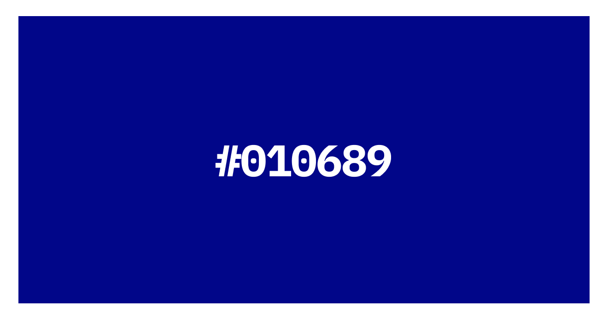

This is
Juta Soft
Remastering a classic DOS cashier app's UI.
Summary
Redesigning a classic DOS desktop experience created for shop inventory management. My goal was to remaster the app by giving it a fresh new style, a modern UI kit, and an improved main flow.
Inspiration
Once upon a time, I visited a shop nearby, and I was captivated by the DOS program they used for inventory management. Despite its minimal design, it had a distinctive style that instantly transported me back to long-forgotten memories of sitting in front of my grandpa's old computer, playing some of the best games I have ever experienced, with such few pixels that I still wonder how it even worked. Inspired by this nostalgic experience, I have made the decision to pay tribute to this old-fashioned program by infusing it with a fresh style and a renewed sense of nostalgia.
Styles
I knew for sure that the heart of this application lies in its simplicity and usability. I wanted to honor that essence and focus on refining the details rather than making drastic changes.


Background
So first things first, one of the most distinctive features is the classic navy blue background. I knew for sure that I wanted to alleviate the eye strain caused by the sharp blue background and make it slightly more subtle. Therefore, I decided to go with a micro-patterned infinite background. Initially, I thought of incorporating a carbon texture (first line) bacause it’s durable and lightweight, much like this software. However, it felt too modern for the intended style. Then, I experimented with gray materials (second line), but it ended up losing its original flair and becoming dull. Finally, I realized that I needed to preserve the nostalgic blue feeling. The Moroccan blue tiles (third line, first from the left) were magnificent as a background decoration, but they were not suitable for the higher purpose. The oriental pattern (third line, last from the left) had a visually striking effect similar to the old background, but I didn't want users to experience hallucinations after prolonged use. Eventually, I settled for a smoother blue shade in the middle. It was just perfect — a sharp, deep blue that wasn't too intense. Moreover, the subtle circles added a nice touch to the overall design, balancing the sharp edges of the components."

Colors
Once again, I recognized that the magic of this app lies precisely in its simplicity. It's like a refreshing breeze in a world filled with complexity, where apps go for the fifty shades of grey.
For the primary color, I have picked the old blue but made it slightly clearer and lighter.
As for the neutral colors, I reintroduced shades of this particular blue.
For the system colors, I utilized Khroma's AI solution to generate complementary colors for my primary blue. I know I know this is a bit more magentaish then red... Well, you are right, BUT this color went so well with the blue that I allowed it to surpass the intended boundaries. I am sorry.
Fonts
Obviously, I searched for the original font, but had no luck. There was no mention of it on the web, and my attempts at image-based searching yielded very few results. However, armed with my own eyes, I set out to find a similar font. This presented a marvelous opportunity to give the app a fresh look. Initially, I tried the 'Sora' font because it captured the unique design of the letter 'l' (imagine it like a number '1' with a perpendicular stem) reminiscent of the original font. However, during the first round of design critique (shout out to @frenipataki), I realized that Sora still conveyed a somewhat modern impression. Ultimately, I opted for 'IBM Plex Mono,' which added a delightful touch of flair. To maintain simplicity, I employed only three font styles for the header, body, and menu title.

Shadows
Who on earth uses hard shadows these days?! Alright, alright, alright I do acknowledge that the recent brutalist or neubrutalist movement has brought them back to some extent. However, I must admit that I became rather excited to experiment with them and give these sharp objects even sharper edges. For the large grey containers, I utilized a subtle transparent shadow, while for the small blue menu containers, I employed a solid black one.
UI kit
The two key components of the UI kit are the large grey container and the small blue container. Therefore, I dedicated ample time to perfecting the details of these elements. Once those were in place, everything else seamlessly fell into line.
Large grey container
I was well aware that I wanted to preserve as much of the original product as possible, while also refining the details and giving it a modern touch. Through some research, I discovered that having two outer lines on the grey container was a standard practice in DOS programs. Although I was unsure of the exact reason, I decided to retain this line but simplify it to a single, clean outer line. I was tempted to round the corners (as it is generally a good design approach) or create a background resembling blurred glass (a prevailing trend), but both options would have resulted in a significantly different appearance. Ultimately, I aimed to embrace the DOS aesthetic side rather than transforming it into an iOS-like app. Thus, I kept much of it intact, preserving the outer line while utilizing the available space outside of it to display the name of the current menu.
Small blue container
Now, moving on to the next iteration. I experimented with a few options here. First, I tried a state-of-the-art design with two lines (still no). Then, I attempted a modern, simple white outer edge, which looked quite unusual when combined with the hard shadow. However, none of these options were as suitable as the magical simplicity of a single line.
But as opposed to her old counterparts the paddings are even, and the size is dependent on the content. It is also aligned in the center almost always.
Generally speaking these were the rules of thumb for every single component in terms of padding, size and place.
Final screens
An homage
The blinking red text at the beginning is an homage to one of my favorite DOS games, Keen Commander 4. Its starting screen featured precisely that - blinking red text.
Copywriting
Terms like 'designation' are never-ever used these days. The question then arises, why not simplify and modernize the terminology? The truth is, the technical jargon is deeply ingrained in the program, and changing it would fundamentally alter its character. Therefore, I decided to leave it unchanged. The same applies to elements like capitalization (none), peculiar and esoteric features (e.g.: “call it a day”), and the overall logic. In a user-centric world, it becomes a fascinating case study to revisit products like this, where programs were predominantly created by and for engineers.
Flow
I have established the main user flow, which involves the user opening the program, setting up a profile, and registering and paying for a couple of items. An essential aspect of this experience was its efficiency. To achieve that, I reintroduced micro-interactions to ensure a smooth flow for a blunt instrument. I believe this paradox best captures the essence of the overall feeling.
Prototype
Please have at it: FIGMA LINK